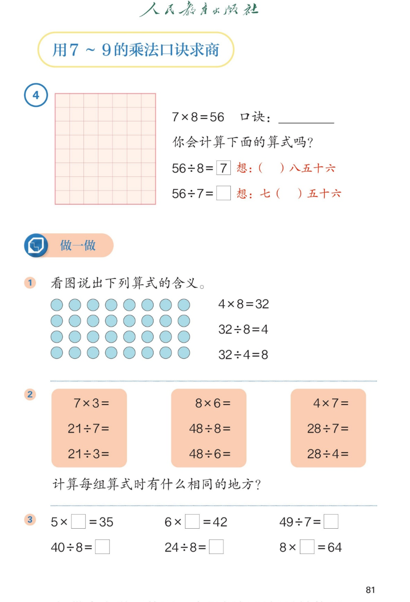

🔊 五、7~9 的表内乘、除法 · 课本第 81 页 · 用 7~9 的乘法口诀求商（例4 + 做一做）
人教版《数学》二年级上册 · 有声图文带读 · 先想后看解析 · 一句口诀算乘除 · 算式的含义
题数
6
认知
2
强化
3
拓展
1
本页重点
用口诀求商 · 算式含义 · 一句口诀一条链
🎧 分两步学：
① 解析教材图片
——纯声音读图，读到哪一块哪一块闪动提示；关键处先倒计时让你思考，再在图片下方给出解析并朗读。
② 分层提问练习
——六道分层题（认知 / 强化 / 拓展），先思考再展开解析、朗读参考答案；这一步不再回到图片。
也可以随时点任意一句话、图上任意一块单独听；点课本文字卡还会展开答案。
教材图片（点块听读，读到哪块哪块闪）

📖 人教版《数学》二年级上册 · 课本第 81 页 · 图片仅供个人学习，版权归人民教育出版社所有
🤔 想一想（点我可跳过）
课本的文字（点句子：听读 + 看答案）
例4
56÷8 和 56÷7 怎么想？
看答案 ▾
56÷8=
7
，想：（
七
）八五十六；
56÷7=
8
，想：七（
八
）五十六；
💡 一句口诀七八五十六，算两道除法
做一做①
三道算式各表示什么含义？
看答案 ▾
4×8=32：4 个 8 相加是
32
；
32÷8=4：32 里面有
4 个 8
；
32÷4=8：32 里面有
8 个 4
。
做一做②
每组算式相同的地方是什么？
看答案 ▾
第一组：三七二十一；
第二组：
六八四十八
；
第三组：四七二十八；
💡 每组 3 道算式用
同一句口诀
。
做一做③
填空答案
看答案 ▾
5×
7
=35；6×
7
=42；49÷7=
7
；
40÷8=
5
；24÷8=
3
；8×
8
=64。
分层提问练习（先想后看解析）
🧮
认知
计算 56÷8 用哪句口诀？商是几？
看解析
🤔 想一想
解析：
想：（七）八五十六；
56÷8=
7
。
🔵
认知
32÷4=8 表示什么含义？
看解析
🤔 想一想
解析：
表示 32 里面有
8 个 4
；
看图：每 4 个一份，正好摆
8 份
。
🧠
强化
48÷6 和 48÷8 各等于几？想哪句口诀？
看解析
🤔 想一想
解析：
六八四十八：48÷6=
6
；
同一句口诀：48÷8=
8
；
💡 一句口诀，两道除法
✏️
强化
40÷8 和 24÷8 各等于几？
看解析
🤔 想一想
解析：
五八四十：40÷8=
5
；
三八二十四：24÷8=
3
。
🔍
强化
8×□=64，□里填几？想哪句口诀？
看解析
🤔 想一想
解析：
想：八八六十四；
8×
8
=64，□里填
8
。
🌈
拓展
为什么 7×8=56 能帮我们算两道除法？
看解析
🤔 想一想
解析：
乘法和除法是
互逆
的；
56 平均分成 8 份每份 7；分成 7 份每份 8；
🌈 一句口诀 → 两道乘法 + 两道除法
① 解析教材图片
② 分层提问练习
⏹ 停止
纯声音 + 高亮跟随 · 想好才出解析
← 返回导航